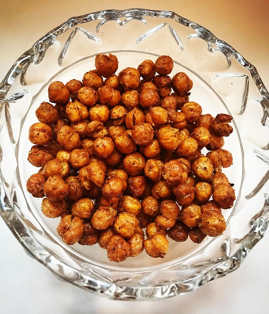

Home
Chickpeas

Description
Roasted chickpeas are a delicious crispy snack or garnish you can make with cooked or canned chickpeas.
Plan ahead so the chickpeas can dry before you roast them — that way, they cook up perfectly crisp and golden brown. Season to taste with spices.
These roasted chickpeas are perfectly crispy and flavorful. They make a delicious savory snack or garnish on salads, soup, or rice dishes.
You'll find a detailed ingredient list and step-by-step instructions in the recipe below.
Ingredients
- 1 (15 ounce) can chickpeas, drained and rinsed
- 1 tablespoon olive oil
- ¼ teaspoon kosher salt, or to taste
- ¼ teaspoon smoked paprika
- ¼ teaspoon black pepper
- 1⁄8 teaspoon cayenne pepper, or to taste
- 1⁄8 teaspoon garlic powder
Steps
- Gather all ingredients. Preheat the oven to 450 degrees F (220 degrees C).
- Place chickpeas in a bowl and blot with a paper towel to dry them.
- Toss chickpeas and olive oil in a bowl.
- Season to taste with garlic salt, cayenne, and salt and toss again.
- Spread chickpeas on a rimmed baking sheet.
- Roast in the preheated oven until browned and crunchy, 30 to 40 minutes; watch carefully to avoid burning them.
- Enjoy!